Version 0.21.3 · Android 14+ · Garmin or Health Connect
Story
Souls do not die. They wait.
They say that at the gates of Vael, the earth opened one morning without trembling. No chasm, no fire: a low stone door covered in runes, and behind it a staircase descending further than the light.
The first to enter never came back. Not dead — held. Their names stayed hooked to the walls, and since then every hall of the dungeon breathes with the breath of someone who has not quite finished leaving.
Kaelen was a pilgrim. He carried a satchel, an inherited blade, and an ember in an iron pot. People called him slow. That is why the march was entrusted to him: souls have no need of hurried heroes.
He understood one simple thing: dungeons are not tombs, they are knots. Each floor is a thread pulled tight around a soul. The guardian who seals it is not an executioner — it is the last keeper of a pain, the one who refuses to let it go. So Kaelen walks. Ten steps to a metre, a hundred metres to a floor. Each step is a word in a prayer he never says aloud.
In the Crypts of Vael, the stone is cold and the candles burn without wax. In the Catacombs, the air smells of moss and old oaths. In the Ash Caverns, he learns to breathe short. In the Drowned Forge, he lays his hand on the anvils and still feels the heat of those who forged for the living. On the Peaks of the Oath, the wind steals his words. In the Wood of Souls, the trees have golden leaves and roots that remember. In the Organic Abyss, the stone bleeds and he does not stop. At the Throne of Souls there is no corridor left: only a door, a guardian, and behind it the First Soul, the one who refused to leave first.
The ember never goes out. As long as he walks, it watches; when he stops, he sets it at the centre of the camp, and the souls passing by warm themselves without daring to come closer.
Kaelen is not looking for an ending. He knows there is none. He is looking for the next soul willing to breathe.
“Defeat is only a detour. Twenty metres back, the gold still flows.”
1. Discovering the game
The March of Souls is an idle pixel-art RPG. You do not steer the walk or the fights: you walk in real life, and your steps are converted into distance in an endless dungeon.
10 steps= 1 metre
100 m= 1 floor + guardian
24 hlifetime of a chest
00:00daily local reset
Two step sources to choose from: Garmin (Personal API) or Health Connect — only one active at a time.
2FA in the browser: the app never sees your Garmin password or code.
No publisher server: progress and the key stay on the phone.
16 ambient 8-bit tracks: two variants per biome, long loop and random start.
You decide: force a chest, change equipment, drink a potion, pick an encounter.
The heart of the game: your steps fill a reserve. The hero spends it automatically to walk, meet monsters, open chests and face guardians.
2. Installing and choosing your step source
Installing the APK
Download the latest APK from GitHub Releases.
Allow unknown-app installs for your browser or file manager.
Open the APK and install it. Later updates keep your data.
Choosing the step source
The game can read your steps in two ways, one at a time:
Garmin — Garmin personal key (Personal API).
Health Connect — steps recorded by Google Fit, Samsung Health or a watch. No key is needed, but you must allow step reading.
The choice is made on first launch, then in Settings → Step source. Changing source does not credit steps already counted today again: the first import of the new source becomes the baseline, and later steps count normally.
Health Connect is a hub: without a provider app (Google Fit, Samsung Health, a watch), it returns zero steps.
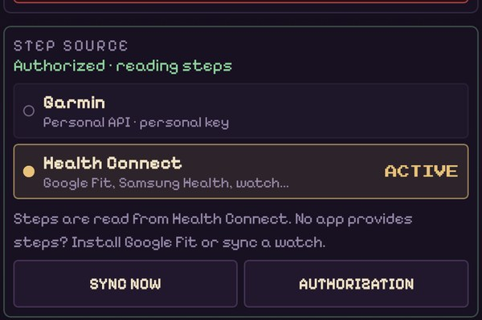
Settings → Step source: one card per source, the active one highlighted, with its state and actions. Here Health Connect is active.
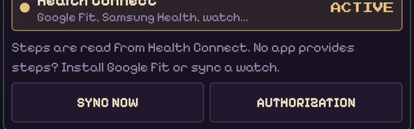
Health Connect selected: step reading is authorised and sync happens locally, without a key.
Creating the Garmin key
In the game, open Settings (⚙) then the Garmin account section.
Tap Open Garmin Connect: sign-in and 2FA happen in the browser.
In Garmin Connect, create a Personal API Key and copy it.
Paste the key into the app.
Enter the expiry date: Garmin does not expose it via the API.
Tap Test and save, then Sync.
Security: never share your key. If it has been exposed, revoke it in Garmin Connect and create a new one. The key and token are encrypted in Android Keystore.
What sync does
The very first sync only credits today's steps: you do not start with a reserve inherited from last week.
After that, it reads the last 7 days, never going back before the first connection date.
Each day is counted only once: no double counting.
Catch-up is capped at 100,000 steps per sync (a marathon is about 45,000 steps).
Recovered steps can be simulated offline: fights, gold, floors.
Garmin sync runs every 60 minutes, at launch and manually. Health Connect is read at launch and manually: Android forbids background reading without a dedicated permission, so the game does not attempt it.
The sync diagnostic (Settings) shows the active source, the 7 days with their state (credited, today, before connection, no steps) and the safeguards applied.
Forgot to sync: after 3 days without opening the game, the next sync recovers the 3 missing days (within the 7-day window and the cap). Beyond that, days that are too old are ignored.
3. The daily loop
From steps to distance
Each synced step increases the walking reserve. The hero spends that reserve continuously: about 30 steps/second, or 60 steps/second when the reserve is large. A step is never spent twice.
Daily cap: 60,000 steps.
Suspicious rate: above 250 steps/minute on average since the last sync, excess steps are ignored and reported in the journal.
Reserve at zero: the hero stops. He sets off again as soon as a sync brings new steps.
Encounters: every 10 m. Guardian gate: at 90 m; the fight starts at 100 m if you engage.
Reset at 00:00
At local midnight: the daily counter, fervour, ration/shard quotas and oaths reset. Distance already travelled, gold, equipment and floors are kept.
Tip: sync after a walk rather than every five minutes. The reserve then drains automatically in the background.
Absence: if you close the app with a reserve, it keeps draining on your behalf, within 30% of the day's steps (adjustable in Advanced settings) and 4 simulated minutes. The simulation stops on a special encounter, a new chest, a camp visit or the guardian gate at 90 m. The guardian is never engaged automatically: the Engage / Farm / Camp choice waits for you on return, and the remaining reserve is kept. See Absence summary.
4. Interface and HUD
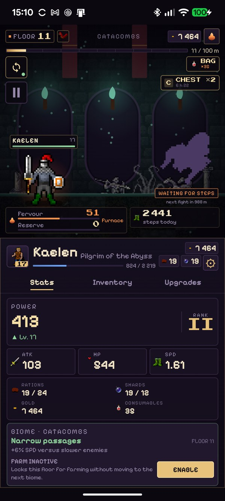
Main screen: scene at the top, sync button top-left, dashboard below.
Reading the screen at a glance
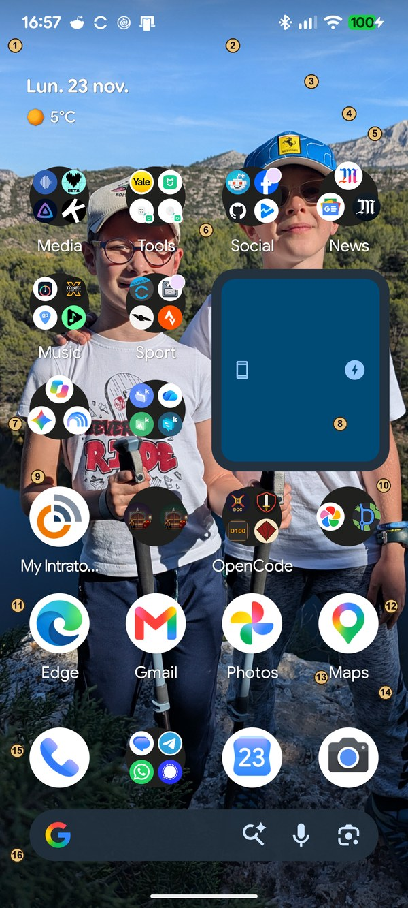
The sixteen areas of the main screen, with the Stats tab open.
Floor — current level. One floor is 100 m; 8 biomes of 10 floors.
Biome — name of the biome you are crossing, with its active rule below.
Gold — game currency (forge, camp, merchant).
Distance — progress within the floor (0 to 100 m). The guardian gate appears at 90 m; the fight starts at 100 m if you engage.
BAG — stored consumables; tap to open them.
Scene — the biome corridor: arches, torches, floor props, hero on the left, enemy or waiting silhouette on the right.
Fervour — 0 to 100, gained with steps, decaying after 2 h without steps; it speeds up SPD and regeneration.
Steps today — synced total (Garmin or Health Connect), from midnight to midnight.
Character — level, floor title, experience bar and value.
Currencies and settings — gold, rations, shards, and access to settings (⚙). The “!” alert appears if no source is configured, if the Garmin key is expiring or if Health Connect permission is missing.
Power — overall indicator of the hero's strength (equipment, level, upgrades).
Rank — rank tier reached (I, II, III…), computed from depth.
Stats — ATK (damage per attack), maximum HP, SPD (attack speed).
Biome and farm — biome rule and FARM button to lock the current floor.
Codex — bestiary, sets and discovered biomes, with direct access.
Step reserve — available steps the hero spends (walking, fights, chests). The bar is full at 4,000 steps.
Top bar
Floor and biome name.
Gold and campfire button.
Floor gauge: 0 to 100 m, with the guardian gate in the last 10 metres.
BAG: consumables, healing and buffs.
CHEST: number of waiting chests and remaining time. A chest never blocks the walk.
Sync button: small square top-left, aligned with the BAG. ↻ icon and status dot (green = recent, amber = old, red = error). Tap to sync; if the source is not ready (Garmin key missing, Health Connect permission denied), it opens Settings → Step source.
Walking pause
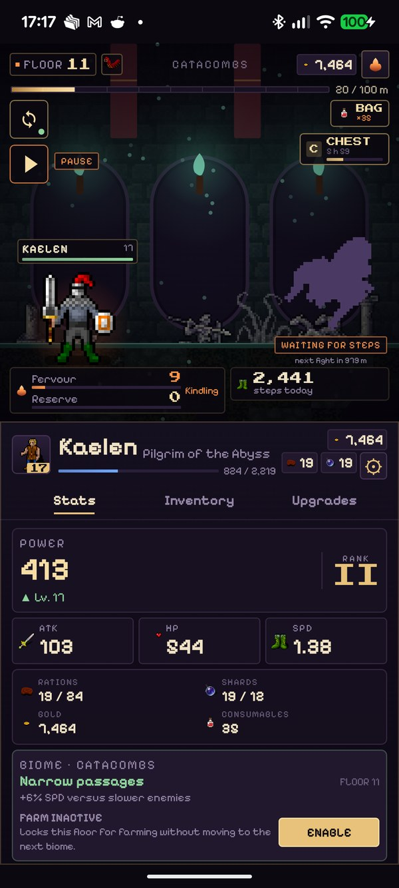
The pause button under sync, with the PAUSE badge and the frozen fight.
The square button under sync freezes the walk, fights, chest opening and animations. A second tap resumes at exactly the same point.
Pause is kept if you switch to the background; closing the app completely ends it.
Fervour, timed buffs, chests and the midnight reset keep following the real clock.
The PAUSE badge stays visible as long as the walk is frozen.
Scene
The hero on the left, the monster on the right.
Health bars, names, levels, floating damage, crits and heals.
Fervour aura behind the hero, biome particles, guardian door.
Upgrades: three permanent upgrades and the next guardian.
Sync bar: replaced by the square button top-left of the scene. Details remain in Settings → Step source.
5. Automatic combat
Combat is automatic. The hero attacks according to SPD, the enemy according to its interval. Damage depends on ATK, fervour, crit and equipment effects.
Stat
Effect
ATK
Damage dealt.
HP
Maximum health points.
SPD
Attack speed and out-of-combat regeneration.
Crit
Critical hit chance (boosted damage).
Regeneration
HP restored per second.
Guardians
Gate at 90 m: the walk stops and the guardian is revealed with its HP, ATK, ability and modifier.
The panel also shows the hero's current / max HP and ATK to help you prepare.
Choice: ENGAGE, FARM THIS FLOOR or CAMP. The fight only starts after ENGAGE, at 100 m.
Phase 2 below 50% HP: telegraphed ability, with no permanent speed-up.
Pity: each defeat weakens the guardian by −5% HP/ATK, up to −25%, reset on victory.
Possible modifiers: Fast, Armored, Berserk, Regenerating, Thief. Fast and Berserk never combine with a heavy ability (blow, breath, drain, pressure).
Guardian gate
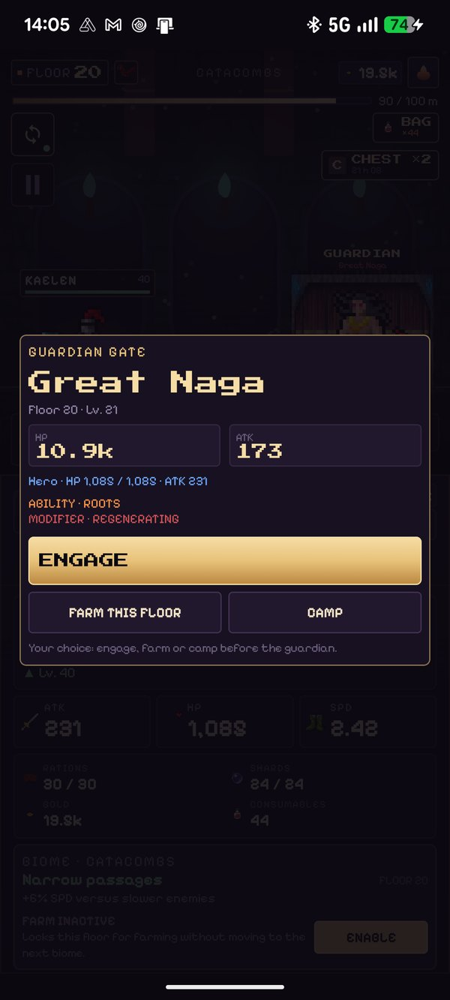
The gate: compare guardian and hero HP/ATK, then engage, farm or camp.
The gate is a choice, not a forced fight. ENGAGE starts the guardian, FARM THIS FLOOR locks the floor and returns to the start for farming, CAMP opens the camp. During offline progression, the simulation stops at the gate and never chooses for you.
Guardian abilities
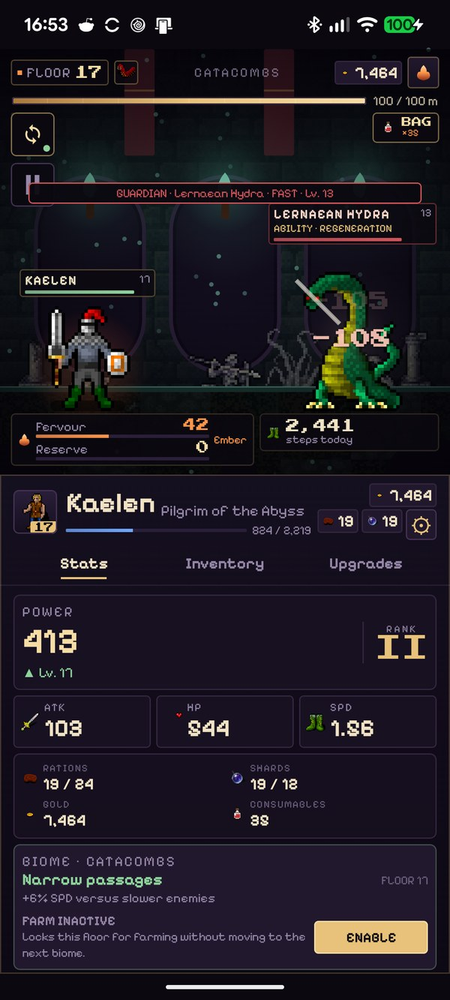
The guardian's ability is shown under its name, then a red banner appears when it triggers.
Ability
Guardians
Effect
Soul drain
Lich, Crypt King
Drains the hero's HP and heals the guardian.
Regeneration
Hydra
Restores about 7% of the guardian's max HP.
Heavy blow
Balrug, demons, executioners
Very powerful attack.
Armor
Golems, Forge guardians
Strongly reduces damage taken for 3 s.
Breath
Dragons
High damage and temporary vulnerability.
Roots
Treant, dryads
Slows the hero's SPD.
Acid
Oozes, zymes, horrors
Damage and temporary vulnerability.
Pressure
Throne lords
Damage and fervour loss.
Defeat and retreat
The hero steps back 20 m and resumes at 60% HP.
Farm zone: three weakened fights, then the walk resumes.
Defeat destroys neither gold nor equipment.
6. Fervour
Fervour is daily momentum. It rises with new steps and burns away with time.
Tier
Threshold
Bonus
Kindling
0–24
No notable bonus
Ember
25–49
+10% SPD, +20% regeneration, +0.5% crit.
Furnace
50–74
+20% SPD, +40% regeneration, +1% crit.
Tempest
75–99
+30% SPD, +60% regeneration, +1.5% crit.
Burning soul
100
+40% SPD, +80% regeneration, +2% crit.
After 2 hours without new steps, fervour decays by about 1 point every 3 minutes.
Decay is caught up even if the app was closed.
Mushrooms, herbs and potions can restore it.
An ember aura surrounds the hero depending on its tier.
7. Resources
Goldmonsters, guardians, chests, sales
Rations1 per 200 steps, max 24/day
Shards1 per 500 steps, max 12/day
Consumablesloot from monsters and chests
The RESOURCES card in the Stats tab always shows: rations, shards, gold and the number of consumables. Rations are also visible in the header and in camp.
Rations: camp healing, automatic emergency healing in combat, waybread.
Shards: full heal, identification, forge, altars.
Gold: upgrades, merchant, statue, forge, wager.
Loot: guardians give 3 shards and 3 rations; chests give 2 shards and 3 rations.
8. Daily oaths
Three optional objectives, renewed at 00:00. Targets vary by date.
Oath
Example target
Reward
Walk
2,500 to 4,000 steps
150 gold + 1 shard
Hunt
1 or 2 guardians
250 gold + 2 shards
Curiosity
1 or 2 chests
100 gold + 1 uncommon item
Rewards are automatic as soon as the target is reached.
An unfinished oath disappears at midnight with no penalty.
The walking streak and weekly steps are shown in the oaths card.
9. Chests
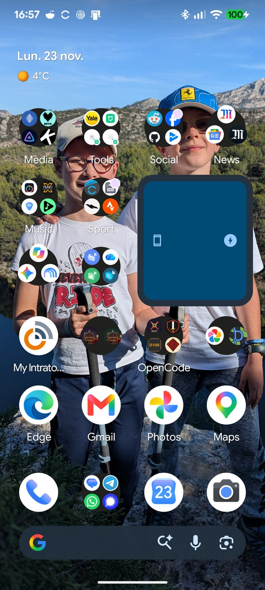
A chest is never a wall: “Keep walking” closes the sheet and leaves it waiting.
Chest
Quota
Gold
Item
Wood
150 steps
40–80
Uncommon
Iron
400 steps
130–220
Rare
Runic
900 steps
380–550
Epic
24 h lifetime, 2 chests waiting at most.
A chest can be ignored: the walk continues.
Commit my steps freezes the walk and spends the reserve to fill the lock.
Stop forcing returns to walking; lock progress is kept.
The cross (or “Hide · forcing continues”) closes the sheet without interrupting the forcing: the CHEST chip then shows lock progress, or “WAITING” if no steps remain.
Chests also drop consumables: 1 to 3 depending on type.
Tip: force a chest when you have no steps left to convert into distance, for example in the evening.
10. Camp
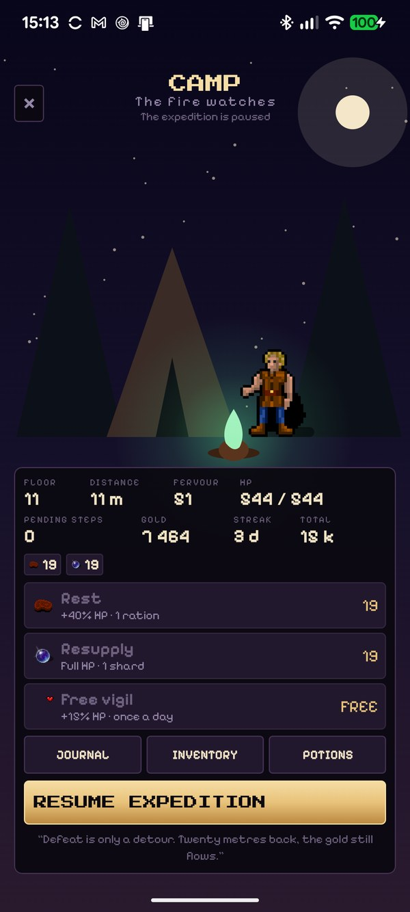
Camp pauses the walk, resets an ongoing fight and gives access to healing, potions and the inventory.
Rest: +40% HP for 1 ration.
Resupply: full HP for 1 shard.
Free vigil: +15% HP, once a day.
POTIONS: opens the consumable bag.
INVENTORY / JOURNAL: management and history.
Resume expedition: closes camp and applies waiting steps.
The panel shows floor, distance, fervour, HP, pending steps, gold, streak and total steps.
11. Inventory and equipment
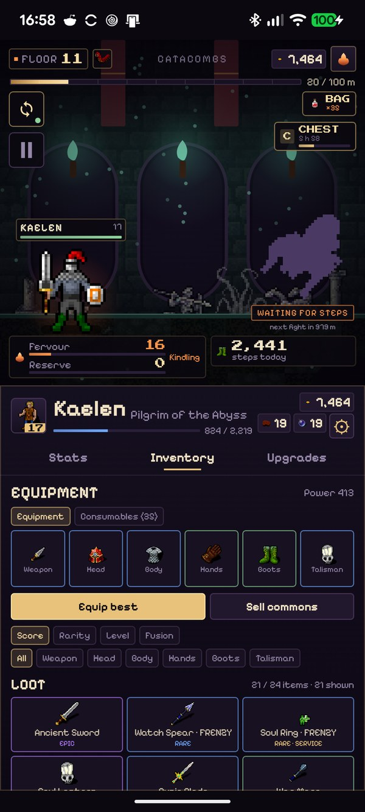
Equipment, sorting, filters and loot.
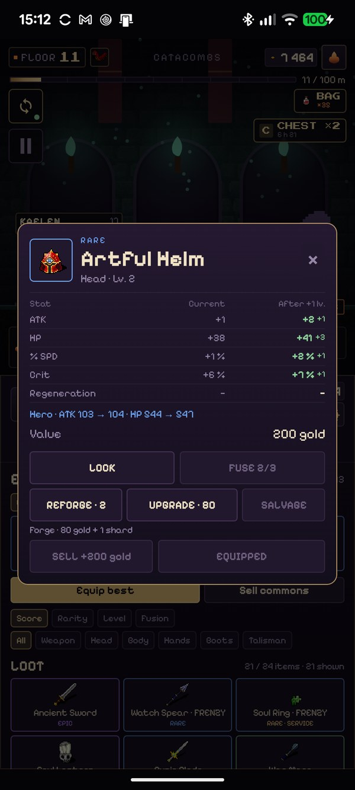
Numerical comparison, effect, forge, fusion and locking.
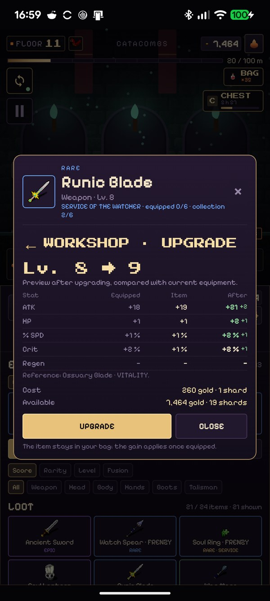
Workshop: next level, cost and chained upgrades.
Six slots
Weapon, head, body, hands, boots, talisman. An equipped item replaces the old one, which returns to the bag.
Rarities
Common, uncommon, rare, epic, legendary. The border and name colour show it. Rare and above items may have an effect, a set, or be unidentified.
Actions
Equip best: compares the six slots and equips every improvement.
Sell commons: converts unlocked common items into gold.
Lock: protects an item from selling and fusion.
Fuse: the open item and the two best identified, unlocked items of the same slot and rarity give an item of higher rarity. Three legendaries give a fused legendary. The result keeps 90% of the summed stats, along with the effect and set. The button shows FUSE when all three are gathered, otherwise FUSE 2/3 and stays greyed out.
Identify: 1 shard reveals the stats of a mysterious item.
Reforge: 1 shard remove or replace the effect (random roll).
Upgrade: gold + 1 shard increase level, ATK and HP.
Salvage: destroys the item for shards.
Sorting and filtering loot
Score, Rarity and Level change the list order; the choice is kept when you switch tabs. The Fusion button is an independent filter: when active, it only shows items whose FUSE button is enabled, meaning those with at least two eligible partners. It combines with the slot filter (All, Weapon, Head, Body, Hands, Boots, Talisman) and shows “No fusable item.” when the list is empty.
Workshop: compare, upgrade, reforge
The item sheet starts with a Stat / Equipped / This item table: the item value is green if it beats the equipped gear, red otherwise, with the gain in small text. For an equipped item, the table becomes Current / After +1 lv. and a Hero line shows the impact on total ATK and HP. The sale value stays under the table.
UPGRADE opens the workshop: current level → next, stat table (Equipped, Item, After), gold and shard cost, then a confirm button. After an upgrade the sheet stays open: a banner recalls the gain applied, the preview moves to the next level and KEEP UPGRADING chains without returning to the inventory. The ← arrow returns to the item sheet, CLOSE exits.
REFORGE opens the effect workshop for 1 shard. The roll is random: 25% no effect, 12.5% for each of the six effects. Level, stats and set do not change; the effect may stay identical or vanish. The result shows old → new, then REFORGE AGAIN rolls again.
Each set covers the 6 slots: weapon, head, body, hands, boots, talisman. It completes at 6/6.
The collection is permanent: a discovered piece stays owned even if you sell, salvage or fuse it. Pieces in the bag, stash and equipment count, identified or not.
Bonuses only apply to equipped pieces: tiers at 2, 4 and 6 pieces. Having 6 pieces in the bag gives no bonus.
Each biome only drops its own sets, on rare, epic or legendary loot, with a 30% chance of being a set piece. The slot is random: duplicates are frequent.
The forge unlocks after the first guardian is defeated.
Items may carry Vampirism, Bulwark, Frenzy, Hunt, Vitality or Precision.
The hero shows a paper doll: helmet, armour, legs, boots and weapon change with worn equipment.
Appearance follows the item family: sword, axe, mace, staff, dagger, spear or whip; leather, mail, plate or robe; hood, helm or crown; leather or metal boots. Rarity separates items without a family.
Tap an equipped slot to open its sheet, compare and see its stats. Hands and talisman do not change the sprite.
Camp stash
The inventory is limited to 24 items. When it is full, the game compares the new item with the worst unlocked item: the better one stays in the bag and the other goes to the stash. Locked items are never moved automatically. Unidentified items use a temporary score based on rarity and level. No item is destroyed: you can take them back one by one, or all at once if everything fits in the inventory.
Capacity: when the inventory is full, the TAKE buttons are greyed out. TAKE ALL is only active when every stashed item fits in the free slots; otherwise it stays greyed out and shows how many slots are missing. The camp's Camp stash shortcut follows the same rule.
Round trip: in an inventory item's sheet, the chest icon at the top right, next to the close cross, sends the item to the stash. It is greyed out if the item is locked and hidden if it is equipped. Tapping a stashed item opens a reduced sheet: comparison with worn equipment, TAKE when a slot is free, SELL and DISMANTLE.
12. Consumables
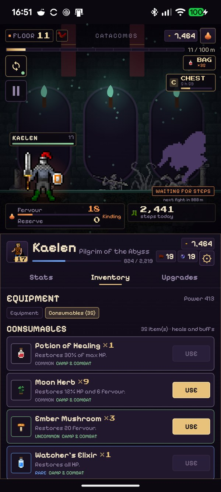
Consumables tab of the inventory.
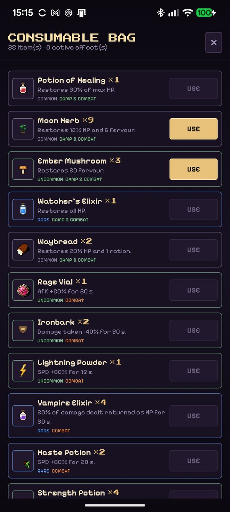
The BAG, accessible from the scene and camp.
Healing and fervour — camp and exploration
Item
Rarity
Effect
Potion of Healing
Common
Restores 30% of max HP.
Moon Herb
Common
Restores 12% HP and 6 fervour.
Ember Mushroom
Uncommon
Restores 20 fervour.
Watcher's Elixir
Rare
Restores all HP.
Waybread
Common
Restores 20% HP and 1 ration.
Dried Meat
Common
Restores 25% HP and 1 ration.
Combat — during a fight only
Item
Rarity
Effect
Rage Vial
Uncommon
ATK +50% for 20 s.
Ironbark
Uncommon
Damage taken −40% for 20 s.
Lightning Powder
Uncommon
SPD +60% for 15 s.
Fire Bomb
Rare
Immediately deals 2× your ATK.
Vampire Elixir
Rare
20% of damage dealt returned as HP for 30 s.
Crit Scroll
Rare
Crit +50% for 15 s.
Berserk Mushroom
Rare
ATK +80%, but damage taken +20% for 15 s.
Haste Potion
Rare
SPD +60% for 20 s.
Strength Potion
Uncommon
ATK +40% for 20 s.
Regeneration Potion
Rare
Regeneration +2 HP/s for 30 s.
Where to find them
Normal monsters: 18% chance, 1 item.
Guardians: 1 to 2 guaranteed items.
Chests: 1 to 3 items depending on type.
Start: 2 potions of healing and 1 moon herb.
Active effects and remaining time
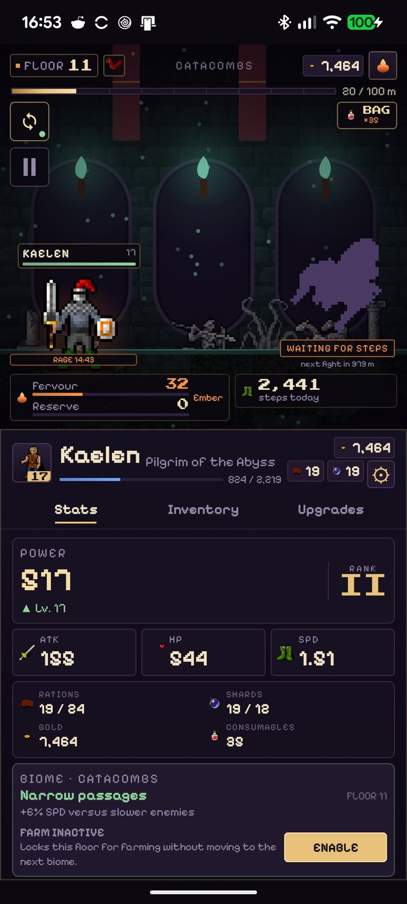
One effect: the chip takes one third of the line.
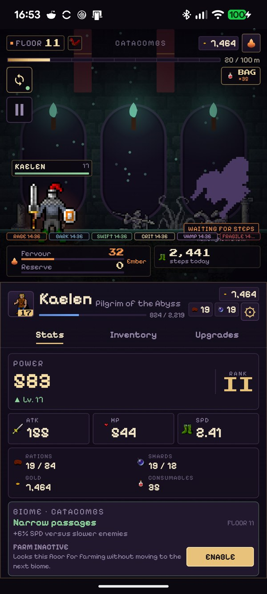
Six effects: one line, six chips and debuffs in red.
Timed effects appear in a single-line strip, just above fervour and the reserve. It shows up to 6 effects with their remaining time. Each chip width is the available width divided by the number of effects, capped at one third.
Bonuses are coloured by family: attack, defence, speed, crit, lifesteal and regeneration.
Debuffs (FRAGILE, ROOTS, ACID, FROST) appear in red.
The countdown refreshes every second, even when the game is paused or the bag is open.
Durations are real: a 30 s effect expires after 30 s, even with the app closed. Use them just before playing.
The strip disappears when no effect is active and reserves no space.
13. Special encounters
About 8% of encounters are replaced by an event. It is never mandatory.
Encounter
Choice
Result
Altar of embers
Offer 2 shards
+180 XP
Clear spring
Drink 1 ration
Full HP
Wandering merchant
Buy with gold
Rare or epic item
Oath statue
Pray 100 gold
+15 fervour, +1 shard
Sealed chest
Wager 100 gold
45%: +300 gold · 55%: lost
After each choice, a RESULT window clearly shows the gain or loss. For the wager: “Bet won · +300 gold” or “Bet lost · −100 gold”.
14. Progression and content
Levels and experience
Monsters, guardians, oaths and events give XP. Each level increases ATK, HP and SPD. The curve slows down gradually.
Permanent upgrades
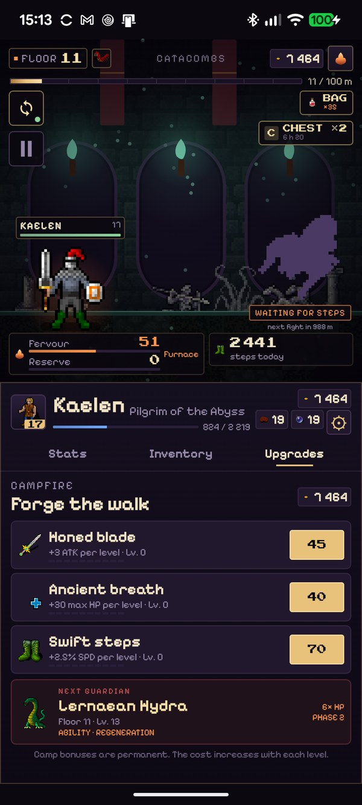
Three upgrades, rising cost, and the next guardian.
Honed blade: +3 ATK per level.
Ancient breath: +30 max HP per level.
Swift steps: +2.5% SPD per level.
Milestones
Every 10 floors: +5% gold, 8 shards, a new title, a legend entry.
Floors 10, 25, 50 and 100: unique guardians.
After floor 10, a depth factor increases enemy HP and ATK.
Biomes
The dungeon crosses 8 biomes, each with its own walls, floors, statues, props, doors and weather. The change happens every 10 floors.
Floors
Biome
Atmosphere
1–10
Crypts of Vael
Purple stone, dust, closed doors.
11–20
Catacombs
Green stone, spores, runic doors.
21–30
Ash Caverns
Volcanic rock, embers, blood fountains.
31–40
Drowned Forge
Metal, sparks, blue pools.
41–50
Peaks of the Oath
Ice, snow, crystals.
51–60
Wood of Souls
Grass, golden trees, leaves.
61–70
Organic Abyss
Slime, spores, acidity.
71+
Throne of Souls
Red hell, ashes, sealed doors.
Biome rules
Each biome applies a modifier to the hero and to enemies. The BIOME card in the Stats tab shows the active rule.
+12% ATK · −5% max HP · fragile but violent enemies.
Throne
Soul pressure
+12% guardian damage · −8% max HP · empowered enemies.
Throne (81+)
Broken Throne
+15% to +35% enemy HP and ATK · reinforced guardians · final boss on floor 100.
Farm mode
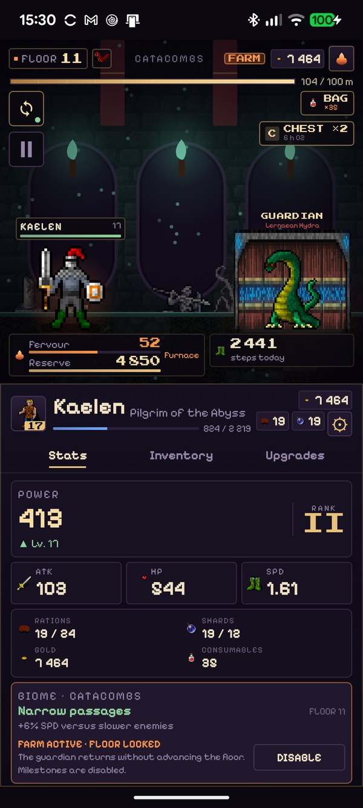
Farm mode active: the floor is locked, the FARM badge appears and the button disables it.
Farm mode lives in the BIOME card of the Stats tab. It is inactive by default.
ENABLE: locks the current floor. A defeated guardian no longer advances to the next floor; the floor restarts from the beginning.
DISABLE: the next defeated guardian advances normally.
A FARM badge shows in the HUD while the mode is active, with RECOVERY · +10% HP per farm win.
During farming, milestones are disabled: no +8 shards and no repeated legend entry. The guardian's loot, gold and XP remain.
A farmed guardian gives +1 shard and +1 ration, capped at 5 farmed guardians per day; beyond that, only loot continues.
The setting is kept in the save and survives a restart.
Estimated play time
The dungeon goes on endlessly after floor 100, but it now has an ending: floor 100 closes with a fight against The First Soul, then an ending screen appears once. “Finishing” here means reaching that ending, then completing the Codex (110 monsters, 35 guardians, 11 sets). The calculation starts from 1,000 steps per floor (10 steps = 1 m, 100 m per floor) and applies a farm coefficient of 3 to 5 (up to 6 for the Codex) for retreats, retried guardians, chests and gear hunting.
Goal
Steps (pure distance)
5,000 steps/day
8,000 steps/day
10,000 steps/day
8 biomes · floor 71
70,000
6 to 10 weeks
4 to 6 weeks
3 to 5 weeks
Legend of Souls title · floor 100
100,000
2 to 3.5 months
5 to 9 weeks
4 to 7 weeks
Full Codex
≈ 150,000
4 to 6 months
2.5 to 4 months
2 to 3 months
In effective walking time (≈ 100 steps/minute), that is about 12 h for the 8 biomes, 17 h for floor 100 and 25 h for the Codex. The rest is farming, not walking.
Assumptions: a player who syncs every day, without hitting the daily cap (60,000 steps) or the suspicious rate (250 steps/min). With no farming at all, the raw path through 70 floors would take only 14 days at 5,000 steps/day, 9 days at 8,000 and 7 days at 10,000: that is the theoretical floor, not a realistic duration. Floors 60+ are endgame and their balance is still being tuned; the high ranges are design targets.
End of the path · floor 100
From floor 81 to floor 100, the Broken Throne rule replaces Soul pressure. Pressure rises gradually: +15% enemy HP and ATK on floor 81, +35% on floor 100, then caps. Throne guardians also get +10% HP and +5% ATK.
Floor 100:The First Soul becomes a final boss (HP ×1.40, ATK ×1.15) and casts THRONE RUPTURE: 230% of its ATK, −20 fervour and 3% HP restored.
Victory: an ending screen appears once: hero stats, progression, telemetry, guardians 81-100, economy, worn equipment, collections and milestones. A button exports this report as HTML. A legend entry is added to the journal.
CONTINUE ENDLESS: play resumes on floor 101. Difficulty stays capped; guardians and milestones continue (125, 150, 200…).
At camp: the golden aura and the hero statue remain visible after floor 100.
Biome gallery
Each biome has its decor, weather and creatures. The hero's paper doll reflects worn equipment.
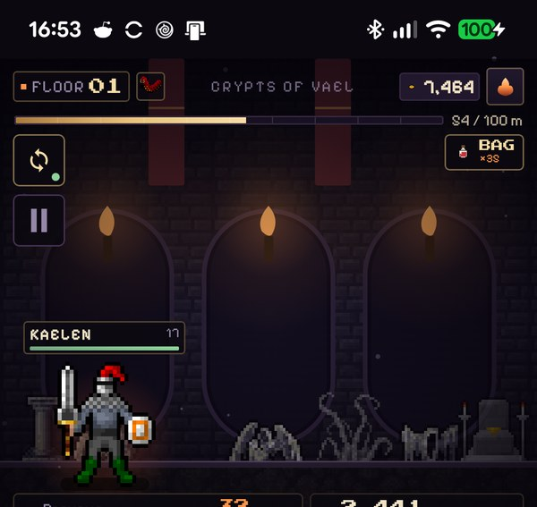
Crypts of Vael: cold stone, candles and dust.
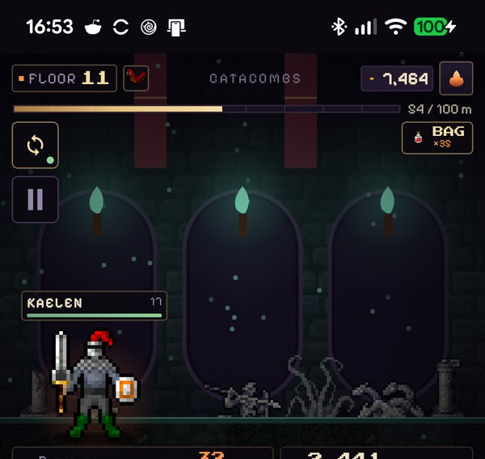
Catacombs: floor guardian and paper doll.
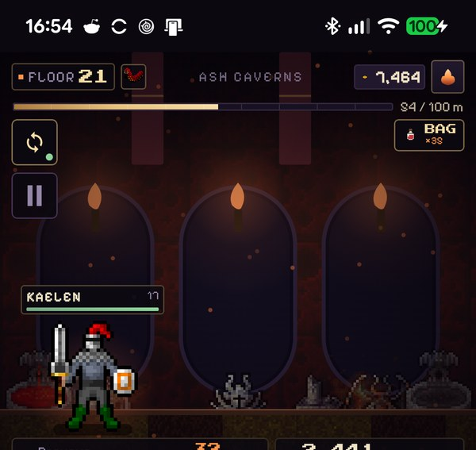
Ash Caverns: volcanic rock and embers.
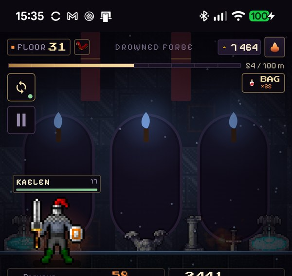
Drowned Forge: blue metal, pools and sparks.
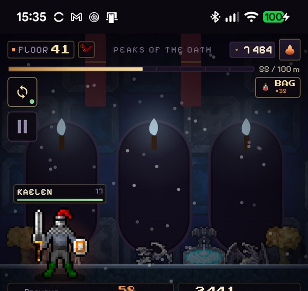
Peaks of the Oath: ice, snow and crystals.
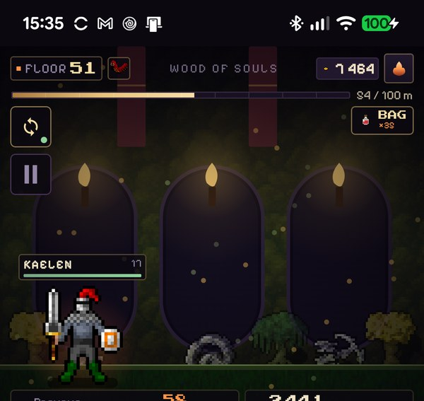
Wood of Souls: grass, golden trees and leaves.
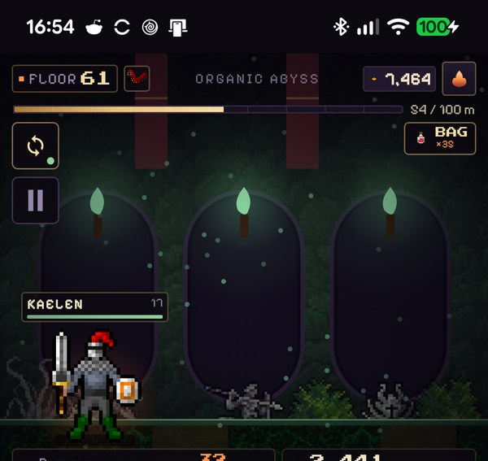
Organic Abyss: slime, spores and acidity.
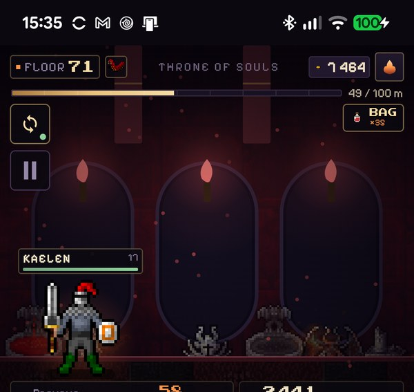
Throne of Souls: red hell, ashes and sealed doors.
Creatures and loot
Each biome has its easy monsters (0–49 m), mid (50–84 m), hard (85–99 m) and its guardians.
Loot tables are biome-specific: thematic weapons, armour, helmets, boots, gauntlets and talismans.
Floors 10, 25, 50 and 100 keep milestone guardians; other floors rotate the biome bosses.
Biome sets are favoured in their region: Frame and Web in the catacombs, Ash in the caverns, Forge in the forge, Oath on the peaks, Wood in the forest, Abyss in the abyss and Throne at the summit.
Ranks and titles
Rank progresses with floors: Pilgrim, Watcher of the Crypts, Pilgrim of the Abyss, Ash Walker, Forge Guardian, Sovereign of the Peaks, Watcher of the Wood, Walker of the Abyss, Legend of Souls.
15. Journal, legend, bestiary
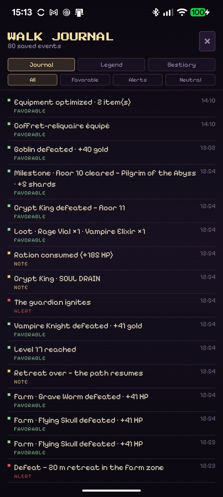
Filterable journal, legend log and bestiary.
Journal: 80 events, Good / Alerts / Neutral filters.
Legend: milestones and persistent feats.
Bestiary: number of kills per creature.
Events are also summarised in the Stats tab.
Codex
The Codex lives in Stats → CODEX card → OPEN CODEX. It tracks the collection across three tabs.
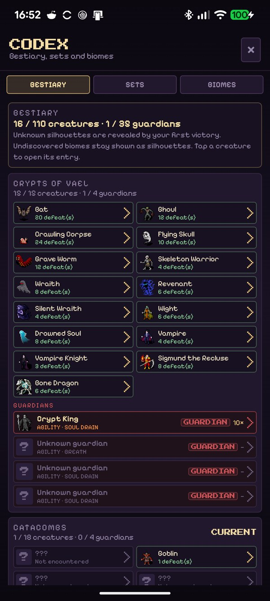
Bestiary: discovered creatures and guardians, still-unknown silhouettes.
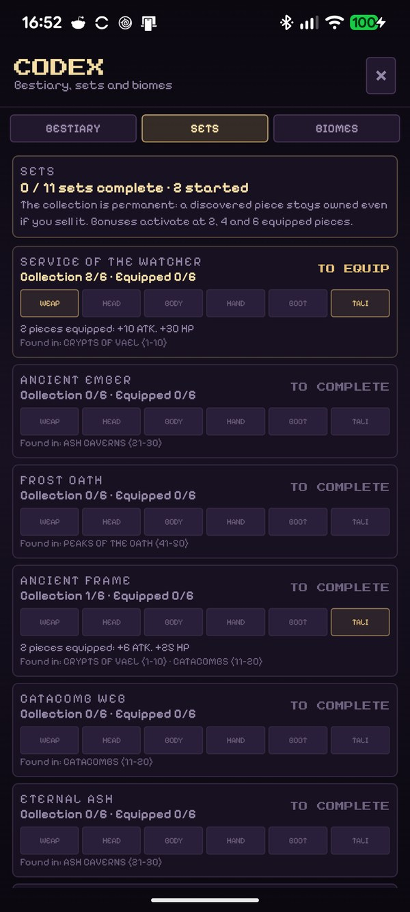
Sets: permanent collection, equipped pieces, missing slots and next tier.
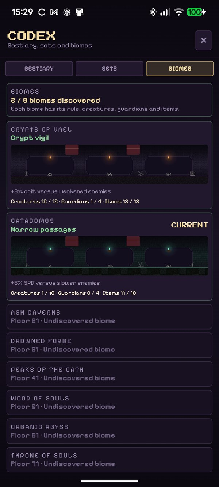
Biomes: active rule, creatures, guardians and discovered items.
Bestiary: a creature is revealed by the first victory. Guardians are tracked separately.
Sets: the collection is permanent (a discovered piece stays owned even if you sell it); the tab distinguishes Collection x/6 and Equipped y/6, shows missing slots, the biome to farm and the next tier. Only equipped pieces give the 2/4/6 bonus.
Biomes: a biome is discovered as soon as you reach its first floor. The Codex shows its rule, creatures, guardians and items.
Items already owned are recognised immediately; items picked up later are added to the collection.
Completing a collection
A set completes at 6/6: you need one piece from each of the six slots (weapon, head, body, hands, boots, talisman) bearing the same set name.
Two counters not to confuse: the collection (x/6) is permanent and counts everything you have discovered, wherever it is — equipped, in the bag or in the stash, identified or not. Equipped (y/6) only counts worn pieces, and it triggers the bonus at 2, 4 or 6 pieces. Selling or salvaging a piece does not reduce the collection.
Where to farm: each set only drops in one or two biomes. The Codex shows “Found in: …” on the set sheet.
When: only rare, epic or legendary loot can be set pieces, with a 30% chance. The slot is random: duplicates are frequent and do not help completion.
Unidentified piece: it already counts in the collection. Identify it (1 shard) to reveal its set and bonus on the sheet.
Bonus: equip 2, then 4, then 6 pieces of the same set. The Codex shows the active bonus and the next tier; the item sheet recalls “equipped y/6 · collection x/6”.
Guardian sheet: ability, stats, biome rule and random modifiers.
Tap a creature or guardian to open its sheet. It shows its image, biome and first-encounter floor, spawn zone, level, HP, ATK, rate, gold and XP given, kill count and biome rule. Stats are those of the first encounter. For a guardian, the ability and its effects are also detailed, along with the possible random modifiers. An undefeated creature stays locked until the first victory. Sheets follow the text size chosen in settings.
Notifications: on/off, with toggles for pending encounter, guardian, guardian waiting, level, oaths, chests, Garmin key.
Quiet hours: 22:00–08:00, alerts without vibration.
Reduced motion: removes bobbing, auras and floating numbers.
Vibration: haptic feedback for alerts.
8-bit sounds: on/off, volume 0–100%, Test sound button.
Sell commons automatically: converts commons on pickup.
Step source: Garmin or Health Connect, with permission, manual sync and sync log.
Sync diagnostic: active source, day-by-day import window with each day's state, safeguards (7 days, 60,000 steps/day, 100,000 steps per import, 250 steps/min) and a sync button.
Balance telemetry: normal fight wins and fights (farm excluded), guardian wins and attempts, attempts and wins for the floor, average fight duration, floors and enemies defeated, rations, shards and gold. Local data, no network.
Save: export, import with preview, export the balance report (local telemetry), clear progress.
Sync log: latest results of the active source, timestamped by day and time.
Check for updates: dedicated card, with an optional daily automatic check.
Game manual: opens this guide inside the app.
Licences and privacy: links to the repository documents.
Ambient music
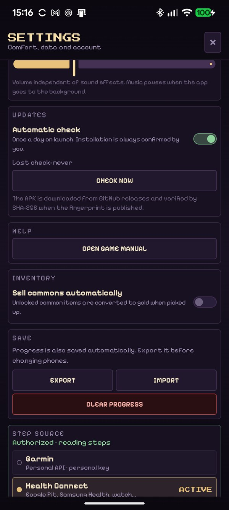
Ambient music: toggle and volume independent from sound effects.
16 original tracks: two 3-minute variants for each of the 8 biomes.
Random start: the track begins at a random position, then loops.
Biome change: short fade to the new atmosphere.
Toggle: Ambient music ON/OFF, enabled by default.
Volume: independent from sound effects, 30% by default.
Background: music pauses when the app is not visible, then resumes.
Tracks are generated for the project and released under CC0.
Advanced settings
At the bottom, the Advanced settings card is collapsed by default: it only opens on demand. It controls the offline progression budget, meaning the steps spent while the app is closed.
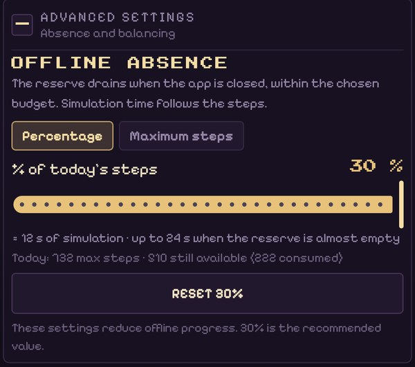
Advanced settings: absence budget as a percentage or maximum steps.
Percentage: 0 to 30% of the day's steps, 30% by default.
Maximum steps: 0 to 5,000 steps, with shortcuts 300, 1,000 and 3,000.
Daily budget: what has already been spent offline today is deducted; two closures share the same envelope.
Duration: it follows the steps, about 1 second per 60 steps, up to twice as long if the reserve is nearly empty. The simulation may stop earlier on an event.
0 disables offline progression; RESET TO 30% returns to the recommended values.
These settings can only reduce offline progression.
17. Updates
The app updates directly from GitHub releases, without the Play Store.
Automatic check: enabled by default. It queries GitHub at most once every 24 h, at app launch.
Manual check:Settings → Updates → Check now.
When a newer version exists, a dialog shows the available version and offers Install update.
The signed APK is downloaded from GitHub into the app cache, then verified by SHA-256 when the fingerprint is published in the release notes.
Android always asks for your confirmation before installing the APK. The first time, allow “Install unknown apps” for The March of Souls.
An update installed with the same signature keeps progress, settings and the Garmin key.
After installation, the app offers to open the GitHub release page to read the changes. You can also choose “Later”.
No silent updates. Nothing installs without your consent: the download only starts after the Install button, and Android shows its own confirmation screen.
Play Protect. Android may show a warning or block an app unknown to Google. If in-app installation is refused, open the GitHub release page and install the APK manually, or allow installation for this app in Android settings.
18. Garmin sync
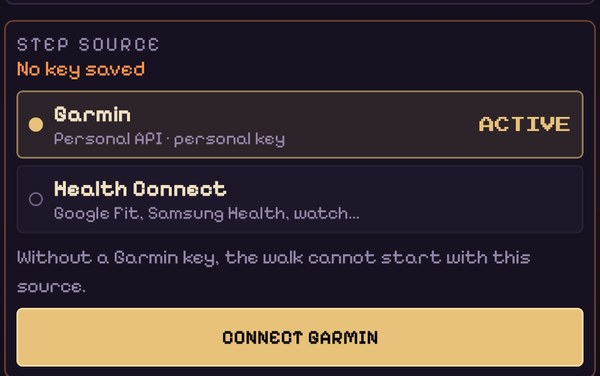
Settings → Step source with Garmin selected: connect a key to synchronise. The sync log and diagnostic sit just below.
Token and key
The personal key is exchanged for a 24 h OAuth2 token.
There is no refresh token: the app requests a new token with the key.
The key and token are encrypted in Android Keystore.
An expired or revoked key causes a 401 error: replace it in Garmin account.
Common errors
Code
Meaning
Action
401
Invalid, expired or revoked key
Create a new key and paste it.
403
Access denied
Check the Garmin key permissions.
429
Too many requests
Wait for the indicated delay, then retry.
5xx
Garmin unavailable
Try again later.
The watch must have synced. If Garmin Connect has not received your steps, the API returns the old total. Open Garmin Connect, wait for the watch, then sync again.
19. Absence summary
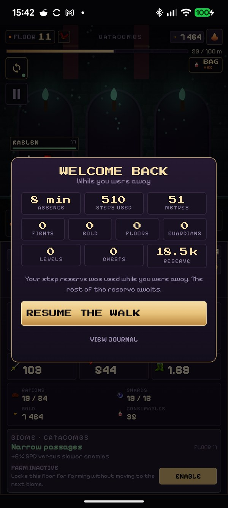
The “Welcome back” screen summarises what happened while you were away.
When you close the app with a step reserve, that reserve keeps draining during your absence. On your return, the game shows a “WELCOME BACK” screen summarising the walk, fights and gains.
When the calculation starts
The absence must last at least 2 minutes.
The simulation only spends the reserve present at closure: steps synced on launch are never swallowed by the absence.
The hero must not be at camp or on a special encounter.
Onboarding must be finished.
The summary appears from 2 minutes of absence, even if the reserve was empty: it then states that nothing advanced. Step sync is downloaded in parallel but only applied when the summary is closed: the step counter and reserve only move after “RESUME THE WALK”, and the message “Garmin synced · +N steps” or “Health Connect synced · +N steps” arrives at that moment.
The summary also lists loot: items recovered during the absence, consumables, rations and shards.
Reserve consumption
The simulation uses the normal active rate (30 or 60 steps per second depending on reserve size), with a budget adjustable in Advanced settings and three safeguards:
30%of the day's steps by default (0–30%, or 0–5,000 steps)
4 minmaximum simulated time
100%of the active rate
7 daysmaximum counted absence
The first limit reached stops the simulation. The budget is daily: two absences on the same day share the same envelope. It also stops on an event: special encounter, new chest or camp visit. In front of the guardian it only stops if less than one floor of budget remains; with one floor or more, the fight is simulated and the guardian can be defeated. The remaining reserve is not destroyed: it waits for you and will be spent normally on your return.
Summary contents
duration of the absence;
steps used and metres travelled;
fights, floors cleared and guardians defeated;
gold gained, levels gained and chests opened;
remaining step reserve.
Two buttons: RESUME THE WALK closes the summary, VIEW JOURNAL opens the event journal directly.
Special encounter
If the simulation hits a special encounter, it stops immediately. The summary says so (“An encounter awaits on the path”), then the encounter appears normally. The game never chooses for you.
Defeat against a guardian
If the hero is pushed back during the simulation, the summary says so and you find the corresponding farm zone. No fight is resolved automatically without your knowledge.
Merged with step sync
If a step sync (Garmin or Health Connect) and an absence happen at the same time, both reports are merged into a single screen: imported steps and reserve consumption appear together, with no double counting. The title then becomes “Absence and step catch-up”.
Persistent report
The summary stays available until you tap RESUME THE WALK. Leaving the app or changing screen does not mark it as read.
Changed clock. To prevent abuse, absence is bounded between 0 and 7 days. A time change or an advanced clock cannot trigger an excessive gain.
Fervour. It decays with real time, not simulated time. The summary does not replace an active session to maintain fervour.
20. Frequently asked questions
Why did the game advance while I was away?
That is the absence summary: the step reserve drains while the app is closed, within the absence budget (30% of the day's steps by default, adjustable in Advanced settings) and 4 simulated minutes. The remaining reserve is kept. The simulation stops at the guardian gate at 90 m; the guardian is never engaged automatically. See Absence summary.
The hero is stuck and no longer advances.
The step reserve is probably at zero. The hero sets off again at the next sync containing new steps. Check today's step count and the last sync.
I am in front of the guardian door but there is no monster.
The gate appears from 90 m. The guardian only appears after ENGAGE; the fight then takes place at 100 m. If a few metres are missing, that is 10 steps per metre. The "WAITING FOR STEPS" label shows when the reserve is empty.
The chest is blocking me.
A chest never blocks the walk. “Keep walking” closes its sheet. If you started “Commit my steps”, reopen the chest and choose “Stop forcing”: lock progress is kept.
Sync always returns the same number of steps.
Garmin has not yet received the watch's new steps (or the app feeding Health Connect has not written). Open Garmin Connect / the health app, let the watch sync, then tap Sync.
I cannot see my rations.
They are in the RESOURCES card of the Stats tab, in the header (meat icon) and in camp, on the healing actions.
My notifications do not work.
Check Settings → Notifications, then the Android permission. On Android 13+, the permission is requested on first launch. You can open it from the system settings.
What happens when the inventory is full?
The new item is compared with the worst unlocked item in the bag. If the new one is better, the old one goes to the camp stash and the new one stays in the bag; otherwise the new one goes to the stash. Locked items are protected. Unidentified items use a temporary rarity + level score.
How do I back up or change phone?
Settings → Save → Export. The JSON file contains progress, never the Garmin key. On the new phone, install the app, choose your step source, then Import the save and confirm the preview.
Progress is also saved automatically about every 30 seconds, on every floor or level change, and just before an app update.
Can I disable sounds or change the volume?
Yes: Settings → Sound. The setting concerns game effects, not Android notifications.
21. Data and privacy
Progress, preferences and the save stay on the device.
The Garmin key and token are encrypted in Android Keystore; they only go to Garmin.
With Health Connect, steps are read locally (permission READ_STEPS), never sent to the publisher.
The app only contacts Garmin (Garmin source) and GitHub (updates, GitHub version). No publisher server, no ads, no trackers.
“Revoke key” deletes the key and token; “Clear progress” resets the game.